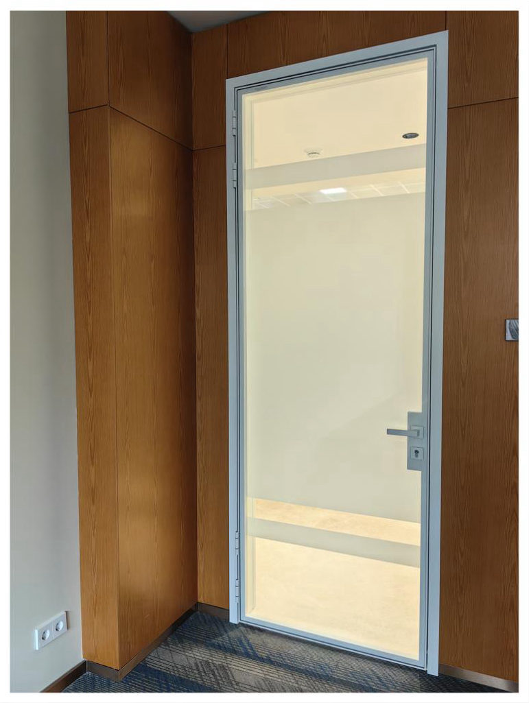
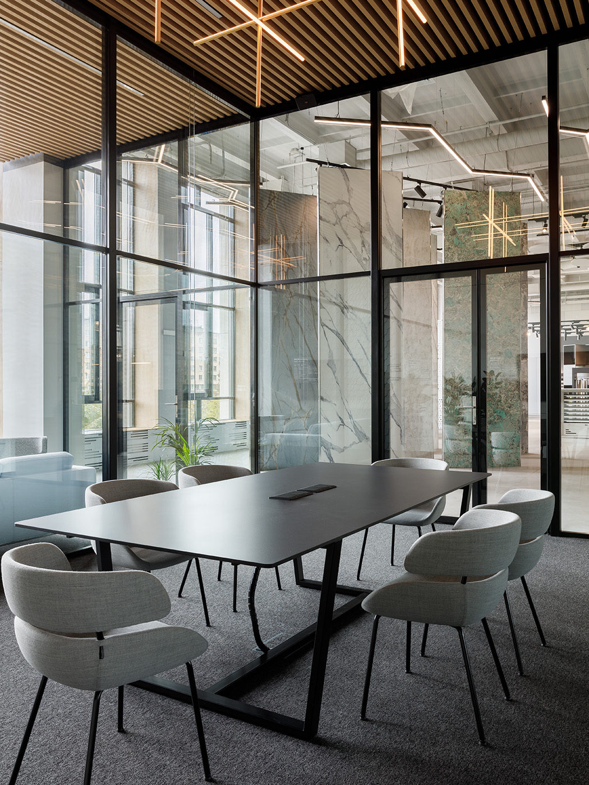
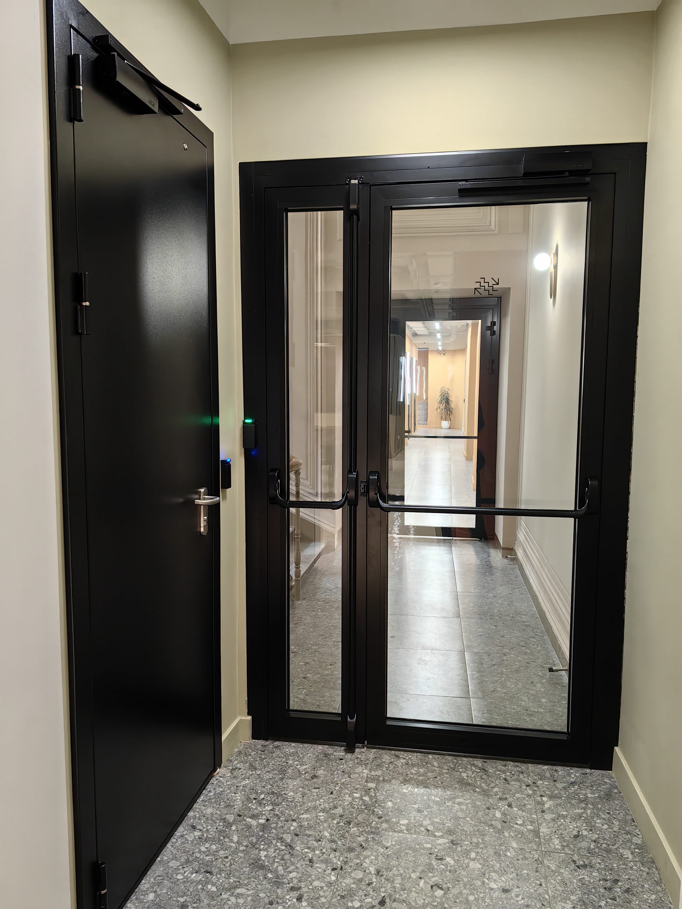

01

Двери в проёмы
Распашные и раздвижные двери в готовые проёмы — стеклянные, со скрытыми коробками или с глухим полотном (ЛДСП, окраска, шпон). Аккуратное примыкание к отделке стен.
02

Двери в перегородки
Двери, интегрированные в стеклянные и профильные перегородки. Единый профиль, скрытые петли, доводчики и системы контроля доступа.
03
Уличные двери
Входные группы и наружные двери в утеплённом профиле — для спортивных, торговых и общественных объектов. Надёжная фурнитура и устойчивость к нагрузкам.
04

Противопожарные двери
Двери с нормируемым пределом огнестойкости для эвакуационных путей и технических зон. Изготавливаем под требования проекта.